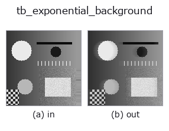
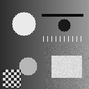

typed op• 数据种类:video → video
• 调用:fullseye.apply(img, "tb_exponential_background", a=0.5, b=0.5)(2-D 的模型是一张图 + 两个标量旋钮 a,b∈[0,1])

*图为在 128×128 合成输入上实际运行的输出。左为输入，右为输出。点云以俯视散点显示(亮度 = z)，一维序列为折线，体数据为沿 z 的最大值投影，视频为中间帧，复数图像为幅值；无法成像的返回值直接显示数值。*
扫描旋钮 a(0.1 / 0.5 / 0.9，另一旋钮取默认):
▸ tb_exponential_background: 旋钮 a 扫描 (文档网站)
*旋钮 b 不改变输出(实测: 0.1 / 0.5 / 0.9 相同)。*
阶段(前置算子 → 本算子，从左到右):
▸ tb_exponential_background: 处理阶段 (文档网站)
换别的图像(合成场景 / 照片 / 硬币。上排为输入，下排为对应输出。旋钮取默认):
▸ tb_exponential_background: 其他输入图像 (文档网站)
动态(GIF: 依次显示帧 / 视点 / 切片。静态图是完整版，GIF 为辅助):

逐帧递归背景 bg ← (1−α)·bg + α·frame → (T, H, W)（video）。
用第一帧初始化 bg，此后逐像素重复 bg += α (frame - bg)，即指数移动平均。状态只有 1 张背景(不保留窗口)。帧 t 的输出是该时刻 bg 的副本，t = 0 就是输入的第一帧本身。
• video：(T, H, W) 数组或 2-D 帧的 list。整数 dtype 按最大值归一化到 [0, 1]，float 裁剪到 [0, 1]。NaN/Inf 为 ValueError。
• alpha：[0, 1]。时间常数约为 1/α 帧(0.05 → 约 20 帧)。为 0 时背景固定为第一帧，为 1 时总是当前帧。物体停下后约 1/α 帧就会被背景吸收(没有选择性更新)。
• 返回值：(T, H, W) float64，[0, 1]。
• 失败：ValueError(形状、dtype、alpha 的范围)。
若还需要前景掩模，用同一模型的 exponential_foreground。想让阈值匹配逐像素的噪声时用 running_gaussian_background。
桥接到 2-D 进化注册表的 videostream op exponential_background。实现相同，只是调用约定改为 op(v, a, b)。a 调节 alpha(默认 0.05)。b 未使用。
• 示例数据目录(下载 URL / 许可证) —— 2-D 用 skimage.data(BSD/公有领域)加合成图,3-D 给出真实数据源(Stanford/PDS 等)的下载 URL。
• 算子来历与参考文献 —— 该算子族所依据的研究/方法出处。
下面的程序已确认可以运行(与图相同的输入)。在 Studio 帮助中，此块会变成按钮，可当场加载并运行。
img_to_video 0.50 0.50 tb_exponential_background 0.50 0.50
下面的示例调用的是底层账本算子 exponential_background。此桥接算子只是把同一实现适配为 fn(v, a, b) 约定，行为完全相同(只是调用形式不同)。
• video_streaming — py -3.11 examples/video_streaming.py
video 作为输入)identity · tb_temporal_bandpass · tb_temporal_band_power · tb_temporal_median_window · tb_moving_average_window · tb_background_subtraction_window · tb_frame_difference_causal · tb_exponential_foreground
typed)tb_points_to_voxel · tb_estimate_point_normals · tb_iss_keypoints · tb_project_points · tb_render_point_depth · tb_statistical_outlier_removal · tb_radius_outlier_removal · tb_voxel_grid_downsample
*Provenance: ops.py — 2D 算子登记表。本条目由 tools/opdocs.py md 自动生成(请勿手工编辑)。*
© 2026 Kazufumi Furuse — Fullseye operator documentation. Licensed under Apache-2.0.